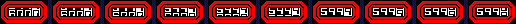
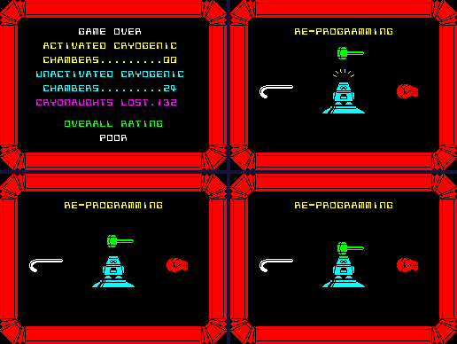
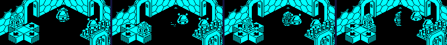
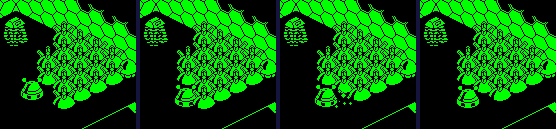
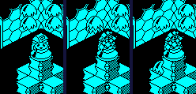
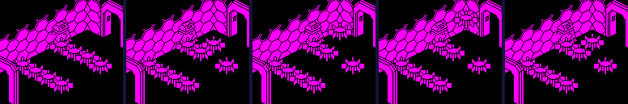
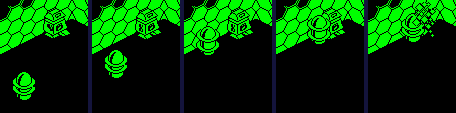

| Alien 8 | The clock, the remote robots and the dangers |
Three things set Alien 8 apart from Knight Lore's rooms: a clock that counts down the light years to the ship's arrival, robots the player drives from a panel of buttons, and a set of dangers of its own beside Knight Lore's. This page takes each in turn.
The clock (CLOCK) is four bytes, the highest digit first; each holds a digit in bits 4-7 and, in bits 0-2, how far it still has to roll. A new game sets 6000, none rolling. Every turn the main loop calls RUN_CLOCK: when the last digit has finished rolling, CLOCK_BORROW takes a light year off, borrowing up the digits (a 0 becomes a 9) and giving each digit it changes a count of 7; then ROLL_CLOCK takes one off the count of every digit still rolling. Each digit is printed by PRINT_ROLLING_DIGIT starting that many rows into its character, so a digit just changed shows mostly the one before it and slides down into place over seven turns, like the wheel of a mechanical counter -- the character after 9 in the font is a second 0, so a 9 comes in from a 0. The last digit is printed inverted, and the 32 by 8 pixels are copied to the screen. When all four bytes are zero the game is over (GAME_ENDED). Nothing in Knight Lore or Pentagram is like it.
A game's first turns, stopped in the simulator just after RUN_CLOCK each turn -- each digit, and in brackets its count:
| Turn | Thousands | Hundreds | Tens | Units |
|---|---|---|---|---|
| 1 | 5 (6) | 9 (6) | 9 (6) | 9 (6) |
| 2 | 5 (5) | 9 (5) | 9 (5) | 9 (5) |
| 3 | 5 (4) | 9 (4) | 9 (4) | 9 (4) |
| 4 | 5 (3) | 9 (3) | 9 (3) | 9 (3) |
| 5 | 5 (2) | 9 (2) | 9 (2) | 9 (2) |
| 6 | 5 (1) | 9 (1) | 9 (1) | 9 (1) |
| 7 | 5 (0) | 9 (0) | 9 (0) | 9 (0) |
| 8 | 5 (0) | 9 (0) | 9 (0) | 8 (6) |
| 9 | 5 (0) | 9 (0) | 9 (0) | 8 (5) |
| 10 | 5 (0) | 9 (0) | 9 (0) | 8 (4) |

The light years on the panel at the end of each of a game's first ten turns: 6000 rolling down to 5999, then the last digit rolling on to 8.
So a light year goes every seven turns: measured over 700 turns in room $A8, an empty room, with the robot standing, the clock went down by 100. The game's 6000 light years are then 42,000 turns. A turn there took 118,398 T-states on average -- the main loop pads a quiet turn out to six units of about 20,000 -- so the clock runs out after at least 24 minutes of play; busy rooms, whose turns take longer, stretch it.
Run out in the simulator -- the clock written as 0001 as RUN_CLOCK began a turn, which it then counted down to nothing -- the game ended as a lost one: the summary counted 0 chambers activated, 24 unactivated and 132 crew lost, and the scene after a lost game followed, the robot being re-programmed: a glove, a hammer and a hook (SCENE_TOOL) taking turns to strike it, one swing at a time, over 332 turns: the count in SCENE_STATE went up from 1 with each swing, was 15 on the last turn watched, and the fifteenth swing's end took it to 16 and the game back to the menu.

The clock run out: the summary, and the scene after a lost game -- the robot on its stand under the sparks, and the tools taking turns to strike it.
Remote-controlled robots (REMOTE_ROBOT, graphics 124-127) stand in 8 rooms, one in each but two in room $0B: rooms $0B, $44, $56, $6A, $6B, $74, $8B, $D9. Each of those rooms has a panel on the floor: a pad (REMOTE_PAD, graphic 128) with four buttons round it (REMOTE_BUTTON, graphics 122 and 123, plain or mirrored), for him to stand on. The collision code gives what he lands on his own Z step, so a pad or a button with a step knows it is stood on; it clears the step and puts an order in REMOTE_ORDERS: 1 for the pad, 2 to 5 for the buttons, by graphic and mirror bit. The robot in control takes the order and moves by a pair of steps from REMOTE_STEPS each turn, two units along one axis, animating as it goes; the pad's order is to stand. A turn with no order gives control up, and the next robot to run takes it: in a room with two, each time the player steps off, control passes to the other. The buttons of room $0B, read from its built records and the step table:
| Button | At (U, V) | Order | The robot's step |
|---|---|---|---|
| 128 | (88, 88) | 1 | none: it stands |
| 122 | (72, 88) | 2 | -2 in U, +0 in V |
| 122 mirrored | (88, 104) | 3 | +0 in U, +2 in V |
| 123 | (104, 88) | 4 | +2 in U, +0 in V |
| 123 mirrored | (88, 72) | 5 | +0 in U, -2 in V |
Run in room $0B: the player put on each button in turn for twelve turns, and on the floor for four between them:
| Stood on | Orders seen | In control, moving | What moved |
|---|---|---|---|
| 122 | $02 | robot 1 | robot 1 from (168, 168) to (150, 168) |
| 123 | $04 | robot 2 | robot 2 from (88, 168) to (106, 168) |
| 128 | $01 | robot 1 | neither moves |
| 122 mirrored | $03 | robot 2 | robot 2 from (108, 168) to (108, 184) |
| 123 mirrored | $05 | robot 1 | robot 1 from (148, 168) to (148, 150) |

Room $0B at the end of the first four buttons' twelve turns.
They are harmless -- nothing in their routine makes them deadly -- and they are there to push. The things that break when moved (FRAGILE, graphic 129) are deadly both ways, and pushable, and turn into the last frame of the sparkle the moment anything gives them a step. The player cannot push one and live; a remote-controlled robot can. They are in rooms $44, $56, $6A, $72, $74, $8B, $D9: every room with a robot but $0B and $6B, and $72, which has 28 of them and clockwork mice to run into them instead. In room $D9, the player on the +U button, the robot moved from U 120 along +U and broke its first on turn 28, leaving 15 of 16:

Room $D9, the remote-controlled robot driven along +U, at turns 20, 27, 28, 31: it pushes a thing that breaks, which vanishes.
CEILING_DROP (graphic 73) is Knight Lore's spiked ball: deadly both ways, hanging until a turn when the random number is under 16, no other is falling (DROPPING) and the drop latch is clear, then falling with a note pitched by its height and a thud when it lands (THUD_ON_LANDING). ENTER_ROOM sets the latch on entering any even-numbered room, and only picking a valve up (or touching an extra life) clears it -- and the four rooms that have these, rooms $0C, $1C, $58, $84, are all even. So nothing drops there until the robot takes something. In the simulator, in room $84: 150 turns with nothing dropping, the latch set; then a valve put beside him and picked up with the key, which cleared the latch; on turn 1 after that one let go, and fell: its Z 148, 147, 145, 142, 138, 133, 127, 120, 112, 103, 93, 82, 76.

Room $84: the first thing to drop once a valve had been picked up, at turns 0, 6, 12 after the pick-up: hanging, falling, landed.
Harm is two bits of +$0D: bit 7 kills what the thing moves into, bit 5 kills whatever touches it, and the collision code passes bit 6, killed, to whichever of two meeting things the other's bits say (see the movement page). MAKE_DEADLY sets both bits; DEADLY_AND_DRAW does that and marks the thing for redrawing. These are all the update routines that reach one of them -- found by searching the code for the calls and jumps, with STILL_DEADLY and SPIKES, which run into MAKE_DEADLY -- with the graphics UPDATES gives them and the rooms that place those. A killed robot's legs and top both turn into the sparkle, and when it is over the main loop starts a life at the last doorway (see rooms and doorways). Nothing else hurts him: a fall only makes a sound. The two-record creatures' lower halves (graphic 11) are not made deadly themselves; while the pair moves it is one box with the upper half, which is.
| Routine | Graphics | What it does | Where |
|---|---|---|---|
| LEAPER | 130 | leaps 48 up now and then, one at a time in a room | rooms $97, $A9, $B7 |
| FRAGILE | 129 | never moves; breaks when anything moves it | rooms $44, $56, $6A, $72, $74, $8B, $D9 |
| SLOW_CHASER | 120-121 | homes on the robot a unit a turn in U and V | rooms $5E, $D8 |
| CLOCKWORK_MOUSE | 116-119 | runs two to five a turn along U or V, turning at random | rooms $3F, $42, $45, $4D, $72, $A9, $D8 |
| CEILING_DROP | 73 | hangs until let go, then falls | rooms $0C, $1C, $58, $84 |
| WANDERER | 94-95 | walks two a turn, turning a quarter when stopped (two records) | rooms $2F, $67, $89, $8A, $AB, $F8 |
| PACER | 86-87 | paces two a turn, turning round when stopped (two records) | rooms $7B, $82, $A6 |
| STILL_DEADLY | 72, 75 | never moves | 54 rooms, from $04, $0B, $0C, $13, $14, $1B, $23, $24, $2F, $30, $31, $33, $34, $36 ... |
| SPIKES | 46 | never moves (the spikes) | 36 rooms, from $03, $04, $0D, $12, $15, $1A, $1D, $20, $27, $39, $3E, $40, $4A, $4C ... |
The leapers (LEAPER) in room $97, left alone for 120 turns: 4 of the room's 8 leapt, never two in the air at once (LEAPING). One of them, its Z from the turn before it went until it was down again: 64, 66, 68, 70, 72, 74, 76, 78, 80, 82, 84, 86, 88, 90, 92, 94, 96, 98, 100, 102, 104, 106, 108, 110, 112, 113, 113, 112, 110, 107, 103, 98, 92, 85, 77, 68, 64 -- two a turn up to 48 above where it started (the height it keeps in +$11), one more as the rising step runs out, and then falling faster and faster.

Room $97: a leaper's jump, every eighth turn from its start.
The chaser (SLOW_CHASER) in room $5E: the robot put at (104, 168) and left standing, the chaser moved to (152, 88) by writing its record. It stepped at him (1, 0) or (1, 1) in U and V a turn -- a unit on each axis until level on one -- and reached him on turn 68, which killed him.

Room $5E: the robot standing still, and the chaser coming, at turns 0, 22, 45, 67, 70.
A clockwork mouse (CLOCKWORK_MOUSE) in room $4D, watched for 64 turns: it ran at 2, 3, 4, 5 units a turn and turned 11 times, always onto the other axis.